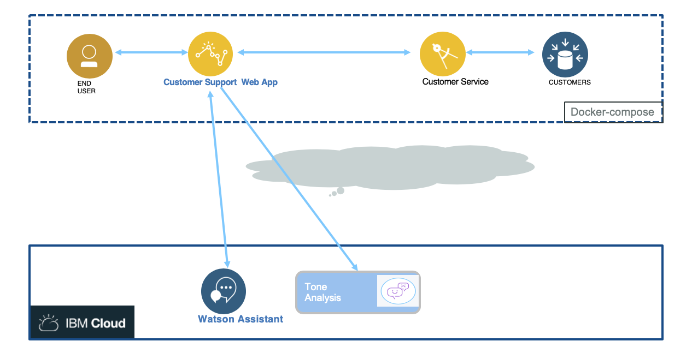

Build and running local
This chapter addresses how to build and run the different component of the application. The approach is to use the cognitive services on IBM Cloud and docker-compose to run the difference service on your local laptop:

pre-requisites
- For this application you need to have nodejs installed on your computer with the npm installer tool.
- You need a local docker engine
- You need docker-compose
Configure DB2 customer tables
Build
You can run a unique command to build all the components of the solution, and build their docker image, or you can build one service at a time.
Build the web app
- You need to install Angular command line interface if you do not have it yet: see the cli.angular.io website with the following command
sudo npm install -g @angular/cli
- If you want to tune the server code, you need to install nodemon to support server code change without stopping the server. The installation is done with
npm:
sudo npm install -g nodemon
In this project run the command: ./scripts/build.sh
Build the customer service
In the project refarch-integration-services use scripts/build.sh
Run
The solution runs with docker compose. Under the docker folder in this project do the following command:
docker-compose up &